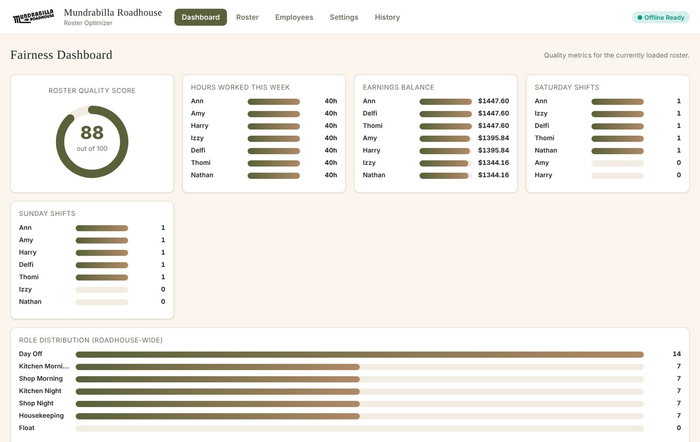

A roster tool that replaced a weekly manual job
Mundrabilla Roadhouse rebuilt its staff roster by hand every week. I wrote the rules for a fair roster and built a tool that generates one. The roadhouse manager now runs it herself.

Context
Mundrabilla is a roadhouse on the Nullarbor Plain, 66 km from the border between Western Australia and South Australia. A small team covers the kitchen, the shop and housekeeping across morning and night shifts, seven days a week.
I worked there on site in 2025 and now look after its marketing, so I knew the roster from the inside.
Challenge
The roster was rebuilt from scratch each week, around who was available and what the roadhouse needed. Weekend shifts pay more, so who works them and who gets weekends off matters to the team. There was no budget for rostering software.
Approach
The useful work was deciding what a fair roster means at Mundrabilla and writing it down as rules a program could follow.
- Saturday and Sunday days off are tracked separately, because Sunday pays more than Saturday.
- Nobody gets both weekend days off in the same week. A ten-week history keeps the rotation fair over time.
- Morning shifts go before a day off and night shifts after it, so each day off gives the longest rest.
- People are only rostered into roles they are qualified for. Holidays and unavailable dates are blocked.
- Hours and earnings are balanced across the team.
I built it with Claude as the coding partner. I set the rules and the trade-offs, tested each version and reported what was wrong. Claude wrote the JavaScript.
Build
A web app that works offline and installs on a phone or laptop. The roster data stays on the device.
- Generate. The app builds many candidate rosters, scores each one against the rules and keeps the best.
- Check. A fairness dashboard shows a quality score out of 100, plus hours, earnings and weekend shifts per person.
- Adjust. Edit any shift by hand, swap two days, undo up to 20 steps, then lock the roster once it is posted.
- Pay. Rates by day of the week, with overrides for public holidays.
- Share. Export to Excel or print an A4 poster for the wall.
It is about 3,000 lines of JavaScript, HTML and CSS. No AI runs inside the app. It follows the rules it was given.
Evidence

Open the live app to generate a roster yourself, or read the source code.
Results
The tool replaced manual rostering and saves about 3 hours a week, by the roadhouse's own estimate. It is still in weekly use.
It is one of five process changes I worked on with management that together save about 10 hours a week.
What I learned
Most of the work was turning the idea of a fair roster into rules precise enough to test. Each bug I found was a rule I had not stated clearly enough. I now write the rules first for any process I want to automate, in marketing as much as in operations.